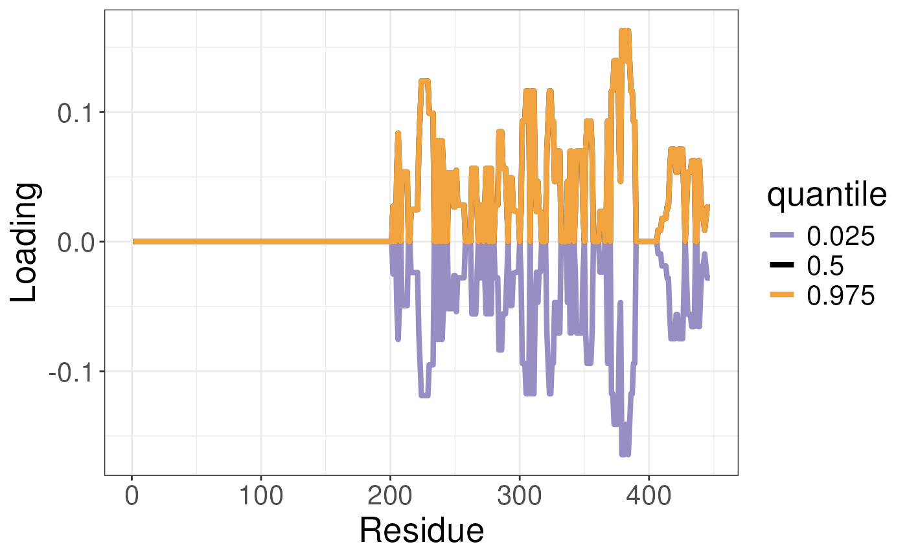

plotTREuncertaintyLoadings.RdFunction to plot the uncertainty in the loading in the conformational landscape. Typically used to obtain uncertainty in the conformational signatures.
plotTREuncertaintyLoadings(
df_all,
pca_states,
states,
whichSamples = seq.int(1, 50)
)The data frame containing the TRE values and the residue number over monte carlo interations. Results from the sampleTREuncertainty function.
The PCA object from the UnsupervisedCSA function
The state name to use for the analysis. e.g. ligand used in differential analysis
The samples to use for the analysis. Default is seq.int(1, 50)
A ggplot object
library("RexMS")
data(TRE_dist)
data("out_lxr_compound_proccessed")
data("LXRalpha_compounds")
states <- names(LXRalpha_compounds)
ucsa <- UnsupervisedCSA(out_lxr_compound_proccessed,
quantity = "TRE",
states = states,
whichTimepoint = 600,
pca_params = list(scale = FALSE,
center = TRUE))
plotTREuncertaintyLoadings(df_all = TRE_dist,
pca_states = ucsa$pca_states,
states = states,
whichSamples = seq.int(1, 50))
